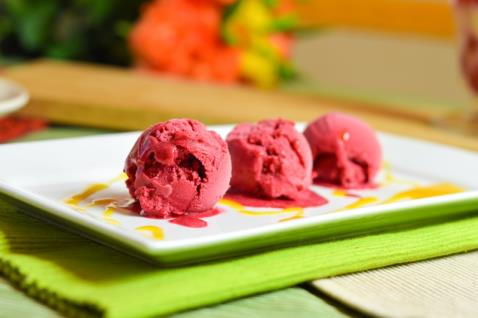
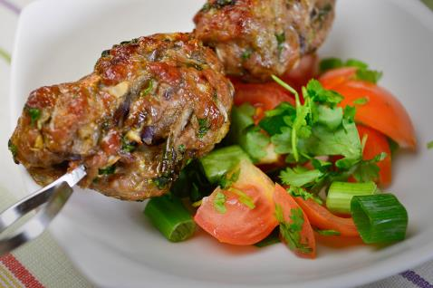

Recipes + Carbohydrate Counting
When you have have a child with diabetes, it's easy to get carried away with the notion of a diabetic diet. But in reality, your child's dietary needs are no different from a child who doesn't have diabetes. Of course, there are certain considerations you need to be aware of, and understanding the carbohydrate content in food is arguably the most important. A meal plan is a good idea to remain organised.
Recipe Ideas
Below are a few recipes put together incase you feel like you need some fresh ideas!!
Strawberry Sorbet

Nutritional Facts (Per Serving) Calories 154 | Total fat 7g | Saturated Fat 4.4g | Carbohydrates 17.1g | Fibre 0.3g | Protein 1.6g
Ingredients:
80g Cream Cheese
100g Strawberries
4 tsp. Triple Zero sweetener
Servings: 1
Lamb Kebabs

Nutritional Facts (Per Serving) Calories 300 | Total fat 21g | Saturated Fat 9g | Carbohydrates 9g | Fibre 2.2g | Protein 18g
Ingredients:
KEBAB MIX
400g minced lamb
2 tsp. garlic, peeled and finely chopped
2 tsp. ginger, peeled and finely chopped
1 large onion, peeled and finely chopped
2 tsp. ground coriander
2 tsp. ground cumin
¼ tsp. ground black pepper
1 tbsp. fresh coriander, finely chopped
4 metal skewers
VERDANT SALSA MIX
3 spring onions, chopped
1 tbsp. olive oil
4 tomatoes, chopped roughly
1 tbsp. pitted olives of your choice
1 bunch of coriander, chopped
1 bunch of parsley, chopped
Juice and grated rind of a lemon
Servings: 4